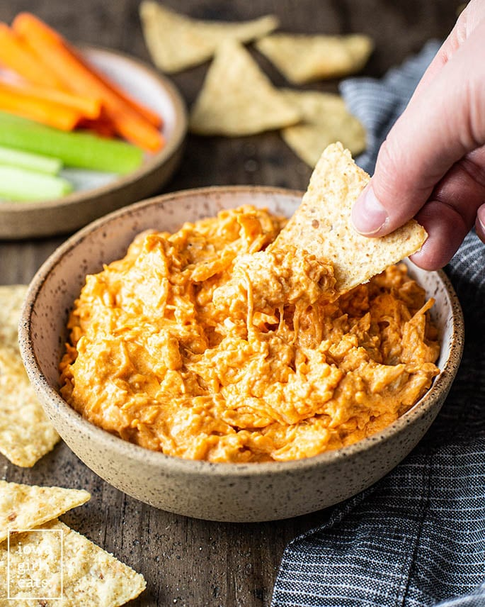

Buffalo Chicken Dip
Home

Finished Crockpot Buffalo Chicken Dip
Ingredients
- 1/2 cup ranch dressing
- 4 oz finely shredded Colby Jack cheese
- For dipping: tortilla chips, carrots, celery
- 8 oz cream cheese, softened to room temperature
- 12.5 oz can chunk chicken breast, drained, Swanson brand recommended
- 1/2 cup Buffalo Wing Sauce, or more for additional spiciness, Franks Wing Sauce recommended
Steps
- Add cream cheese, shredded cheese, wing sauce, and ranch dressing to a 3qt crock pot or 6qt.
- Stir to combine then heat on LOW, until hot 1 1/2 - 2 hours, stirring a couple of times.
If you use a 6qt crock pot it will take 1 1/2 hours. Serve with favorite dippers & enjoy!